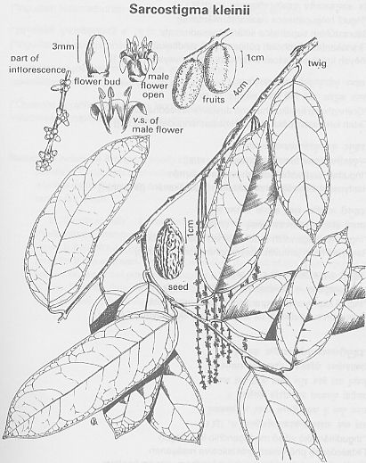

Sarcostigma
kleinii
Wight & Arn.
Taxonomic Details

----- Correct Name
----- Classification
----- Synonyms
----- Common Names
Other Biological Details
----- Habit and Habitat
----- Diagnostic Features
----- Reproductive Biology
---------- Breeding System
---------- Phenology
---------- Pollinators
---------- Seed Biology
----------Seed Germination
------ Cultivation
----- Major Pests and Diseases
Economic Potential and Uses
----- Parts Used
----- Uses
----- Harvesting Practices
----- Produce and Products
----- Chemistry
----- Processing Techniques
----- Other uses
----- Economic Potential to the
Country
----- Export Potential
Miscellaneous Information
Literature
Taxonomic
Details
Correct Name
:Sarcostigma kleinii Wight & Arn.
Family : Icacinaceae/ Olacineae
Synonyms :
Common Names :
Sanskrit: Ingudi
Malayalam: Vel-leiodal. Odal, Ota, Vellayotal,
Tamil: Odal, Puvennai, Otal, Peevenna, Puvanna,
Kannada: Puvanna,
Back to Top
Other
Biological Details
HABIT & HABITAT
A large shrubby climber found in the evergreen forests from Konkan southwards
and at low elevations in the western ghats, extending into the Annamalai's and
the hills of Kerala.
It is found
on bunds of Fileds, Outskirts of Wet Deciduous forests in lower ghats, evergreen
forest, Hedges, Hill forests, Low elevation, low elevations, Midlands, along
Rivers and Streams, Moist forests, Plains, semi evergreen forest and Undergrowth.
BioticZone: Khasia hills, Konkan, Peninsular India and Western Ghats.
Availability :
Misc: Anaimalais, Anamalai, Canacona, Caranzol, Chorla ghat, Cochin, Gairsoppa
falls, Hills of travancore, Irpu, Kannoth, Mattara, Nadquem, Nadugani Ghats,
Nilambur, North kanara to Wynaad, Travancore, Way to Panoth, Western ghats and
Wynaad,
Country: India, Malacca and Malayasia.
Zone: East, South, South west and Westzone.
State: Karnataka, Kerala and Tamil Nadu.
District: Belgaum,Cannanore,Chikmaglore,Coimbatore,Dakshin Kannada, Hassan,
Kanyakumari, Kodagu, Kukri, Malappuram, Nilgiri, Shimoga, Simla, Tirunelveli
and Uttar Kannada.
Status :
Back to Top
DIAGNOSTIC FEATURES
Leaves oblong, oblong-lanceolate or ovate; flowers yellow, minute,
unisexual, in axillary or extra-axillary spicate racemes, female flowers slightly
larger than the male; drupes olive-shaped, somewhat be injurious to eyes.
Back to Top
REPRODUCTIVE BIOLOGY
Breeding System :
Phenology :
The flowering occurs from July-December and in some places flowering will be
from December-March.
Pollinators:
Seed Biology :
Seed Germination :
Cultivation:
Back to Top
MAJOR PESTS & DISEASES
Pests:
Diseases:
Back to Top
Economic
Potential and Uses
Parts used:
Bark,
Seed, Fruit.
Uses
- Defatted seed meal contains 36.9 per cent protein
and is suitable as a
feed.
- Fruit is eaten by the Natives of the Andaman islands.
- Oil
is burnt in lamps.
Harvesting
Practices
Produce and Products
Back to Top
Chemistry
It
has the following characteristic solid, p., 20°; d^5- , 0.9274; viscosity
(Engler) ^ <', 1.4649-1.4651; sap. val., 196.6; acid val., 11.9. |g val.,
69-73; acet. val., 49.5; and R.M. val., 0.55. The'daponent fatty acids are :
oleic, 55.2, linoleic, 10.8-^ffl saturated acids, 34.0%. The unsaponifiable
matter dstains a pliytosterol
The protein has the following ain^ acid make-up (g./16
g.N) : glycine,
7.4; alanine, 4.9; ^ partic acid, 11.3; glutamic acid, 8.4; serine, 8.1; threonint
5.1; valine-methionine, 8.1; and leucines, 7.2; arginin^ 6.1; hisddine, 4-0;
lysine, 3.7; proline, 3.7; tyrosine, 3.^ phenylalanine-tryptophane, 5-5; and
cystine, 30 (Ming & Misra, /. agric. Fd Chem., 1967, 15, 697). ;' Powdered
bark mixed with honey is given in rheumatism, leprosy, hysterics, and ulcers;
the bark and leave are boiled in oil for application in rheumatism (Rama Rao,
80). S. edule Kurz, a climber much allied
to S. kleinii, is frequently met with in the tropical forests of the Andaman's.
The orange-colored fruits are eaten.
Back to Top
Processing Techniques
Back to Top
Other Uses
Powdered bark mixed with honey is given in rheumatism,leprosy,hysterics and
ulcers.
Back to Top
Export Potential
Back to Top
Miscellaneous
Information
Back to Top
Literature
- Sasya sahyadri- CD on Plants of Western Ghats, 2003, K.N. Ganeshaiah.
- Sarcostigma kleinii- A Dictionary of Economic products of India, 1983,
George Watt, Vol.VI, Part 2.PP. 478.
- The Flora Of Nilambur,V.V.Sivarajan and Phillip Mathew,1997,FSI, Bangalore
Back to Top